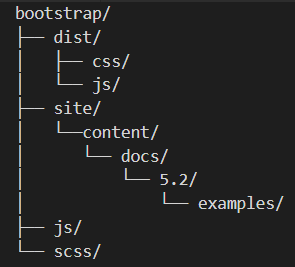
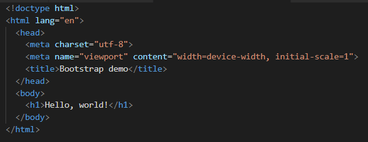
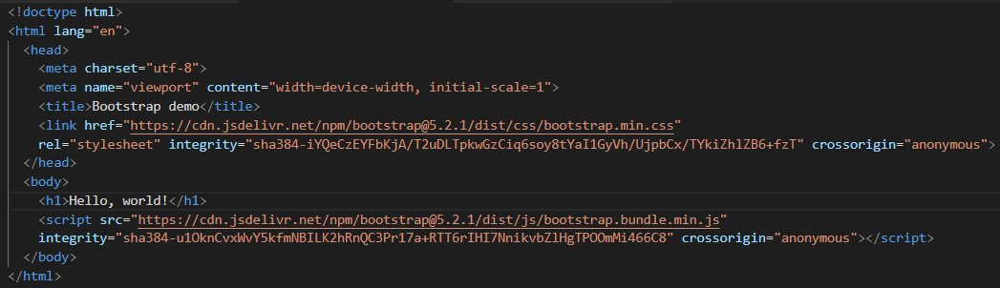

Contenidos de Bootstrap y guía para comenzar
Explicación del contenido y código fuente
Al decargar Bootstrap encontramos archivos compilados para un uso rápido en casi cualquier proyecto web. Nos proporciona CSS y JS compilados ( bootstrap.*), así como CSS y JS compilados y minimizados ( bootstrap.min.*). Los archivos JS incluidos ( bootstrap.bundle.jsy minificados bootstrap.bundle.min.js) incluyen Popper .
Bootstrap incluye las siguientes opciones para incluir parte o la totalidad del CSS compilado.
| Archivo CSS | Diseño | Contenido | Componentes | Utilidades |
|---|---|---|---|---|
| bootstrap.css bootstrap.min.css bootstrap.rtl.css bootstrap.rtl.min.css |
Incluido | Incluido | Incluido | Incluido |
| bootstrap-grid.css bootstrap-grid.rtl.css bootstrap-grid.min.css bootstrap-grid.rtl.min.css |
Solo sistema de rejilla | - | - | Solo utilidad flexible |
| bootstrap-utilities.css bootstrap-utilities.rtl.css bootstrap-utilities.min.css bootstrap-utilities.rtl.min.css |
- | - | - | Incluido |
| bootstrap-reboot.css bootstrap-reboot.rtl.css bootstrap-reboot.min.css bootstrap-reboot.rtl.min.css |
- | Solo reiniciar | - | - |
Del mismo modo, tenemos opciones para incluir parte o la totalidad de JavaScript compilado.
| Archivos JS | Popper |
|---|---|
| bootstrap.bundle.js bootstrap.bundle.min.js |
Incluido |
| bootstrap.js bootstrap.min.js |
- |
La descarga del código fuente de Bootstrap incluye los archivos compilados de CSS y JavaScript, junto con la fuente Sass, JavaScript y la documentación. Más específicamente, incluye lo siguiente y más:
Los scss/ y js/ son el código fuente de nuestro CSS y JavaScript. La carpeta dist/ incluye todo lo que se enumera en la sección anterior. La carpeta site/content/docs/ incluye la documentación, incluidos ejemplos en vivo del uso de Bootstrap.
¿Cómo utilizar Bootstrap? Inicio Rápido
Bootstrap te brinda un conjunto de elementos pre-diseñados listos para usarlos como botones, formularios, cards, etc. Todos ellos poseen una clase CSS asignada por Bootstrap la cual llama a una o muchas propiedades CSS y le da un estilo predeterminado.
Para usar Bootstrap en una página HTML, el desarrollador solo debe incluir el CSS y JavaScript de Bootstrap a través de CDN sin necesidad de ningún paso de compilación.
Para realizar una demostración sencilla de cómo se utiliza vamos a crear un "Hola Mundo". Los pasos a seguir son los siguientes:
- Creamos un archivo "index.html" en la raíz del proyecto con el siguiente contenido:
 - Incluímos el CSS y JS de Bootstrap. Para ello introducimos las dos siguientes líneas de código como se puede ver en la imagen:
 - ¡Hola Mundo! Si abres el "index.html" en un navegador podrás ver el resultado. A partir de ahora puede comenzar a crear su propio diseño con Bootstrap , agregando docenas de componentes y utilizando los ejemplos oficiales.
A continuación, un tutorial que muestra el resultado de la ejecución de los pasos detallados anteriormente:
La página oficial de Bootstrap ofrece varias plantillas de ejemplo con el código fuente, estas se pueden consultar en el siguiente enlace.